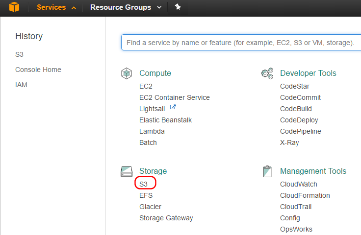
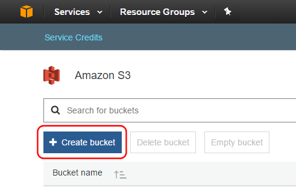
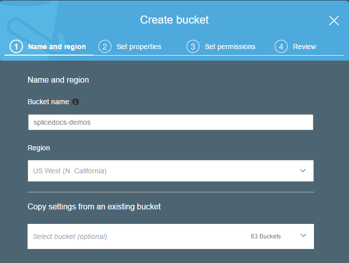
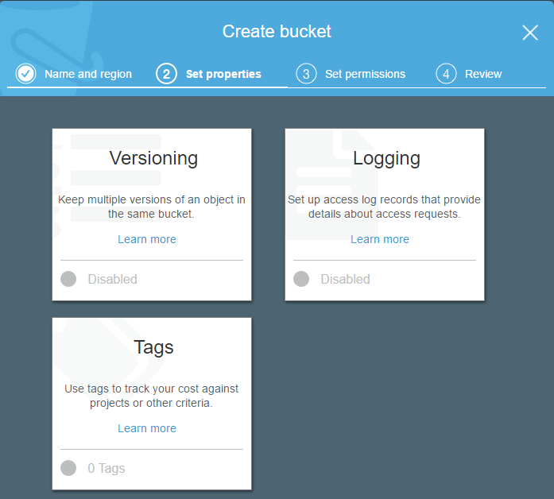
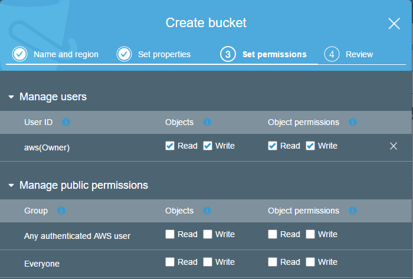
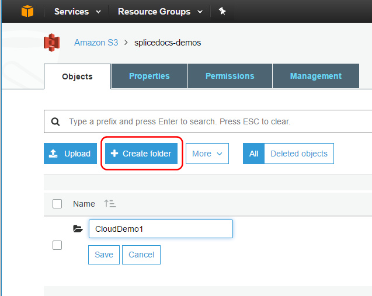
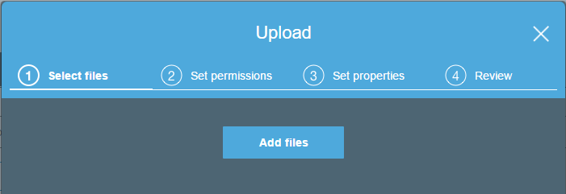

Uploading Your Data to an S3 Bucket
You can easily load data into your Splice Machine database from an Amazon Web Services (AWS) S3 bucket. This tutorial walks you through creating an S3 bucket (if you need to) and uploading your data to that bucket for subsequent use with Splice Machine.
After completing the configuration steps described here, you'll be able to load data into Splice Machine from an S3 bucket.
Create and Upload Data to an AWS S3 Bucket
Follow these steps to first create a new bucket (if necessary) and upload data to a folder in an AWS S3 bucket:
-
Log in to the AWS Database Console
Your permissions must allow for you to create an S3 bucket.
-
Select Services at the top of the dashboard

-
Select S3 in the Storage section:

-
Create a new bucket
-
Select Create Bucketfrom the S3screen

-
Provide a name and select a region for your bucket
The name you select must be unique; AWS will notify you if you attempt to use an already-used name. For optimal performance, choose a region that is close to the physical location of your data; for example:

-
Click the Next button to advance to the property settings for your new bucket:

You can click one of the Learn more buttons to view or modify details.
-
Click the Next button to advance to view or modify permissions settings for your new bucket:

-
Click Next to review your settings for the new bucket, and then click the Create bucket button to create your new S3 bucket. You'll then land on your S3 Management screen.
-
-
Upload data to your bucket
After you create the bucket:
-
Select Create folder, enter a name for the new folder, and click the Save button.

-
Click the Upload button to select file(s) to upload to your new bucket folder. You can then drag files into the upload screen, or click Add Files and navigate to the files you want to upload to your folder.

-
You can then optionally set permissions and properties for the files you are uploading. Once you're done, click the Upload button, and AWS will copy the files into the folder in your S3 bucket.
-
-
Make sure Splice Machine can access your bucket:
Review the IAM configuration options in our Configuring an S3 Bucket for Splice Machine Access tutorial to allow Splice Machine to import your data.